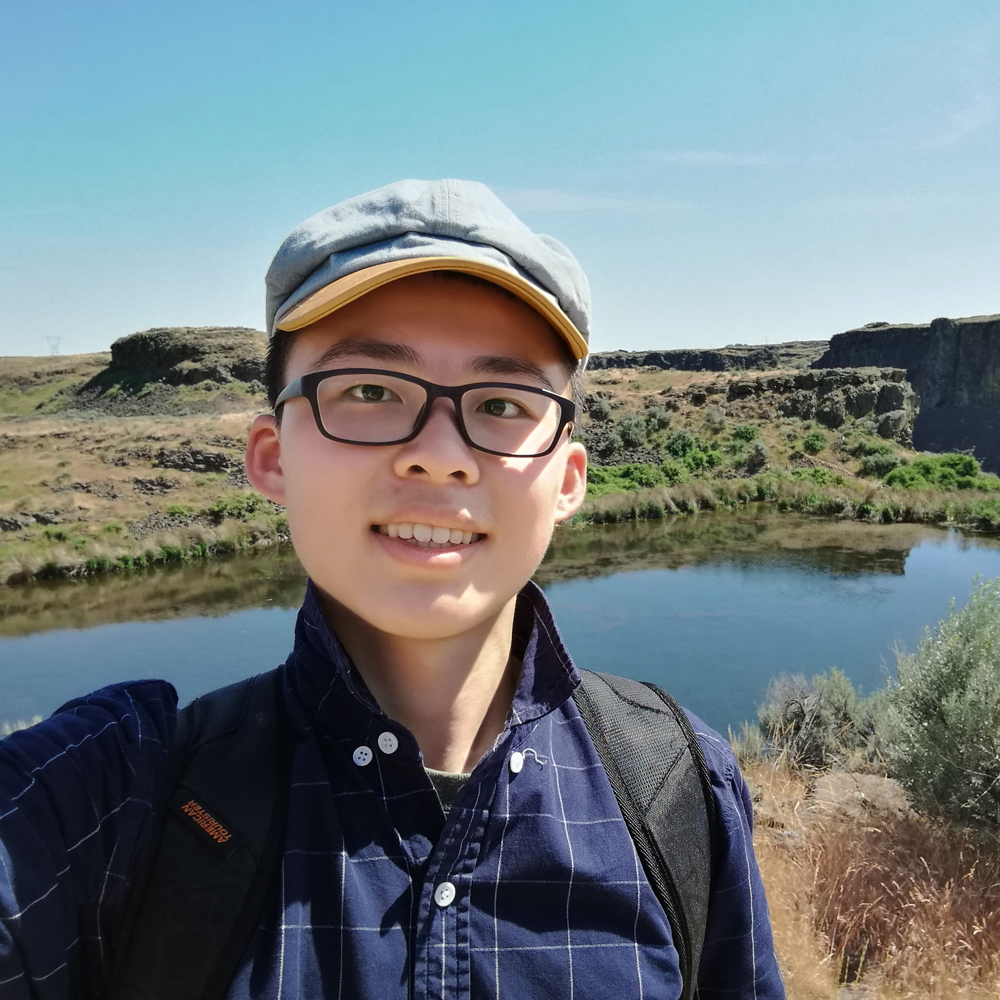

大佬，小弟还在努力赶工中：
我是卡尔顿学院23’届的留学生。卡尔顿学院坐落在明尼苏达州一望无际的玉米地中，是美国前十的文理学院。 I'm interested in a lot of different things (that's why I go to a liberal arts college): I love Computer Science, Economics, and Biology; I enjoy wrestling, weight lifting, and jogging; I play the accordion and sing baritone.
Before high school, I lived in Foshan, China (a city near HongKong). I then went to high school in Seattle. I can talk with you in Mandarin, Cantonese, Hakka(客家话), and in very little Spanish.
Download PDF ResumeMy Blogs
看英文版的吧（右上角），中文版的等我补上。Professional (technical) Blogs
- Under Construction
Personal Diary
- Under Construction